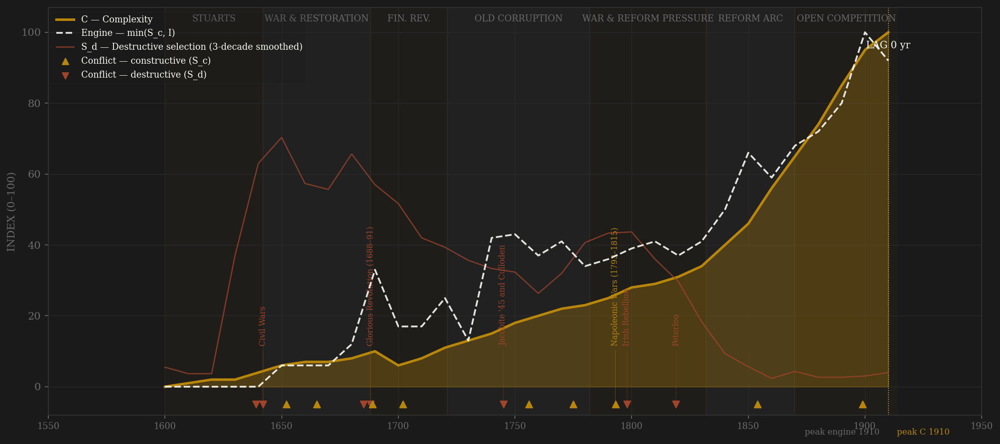
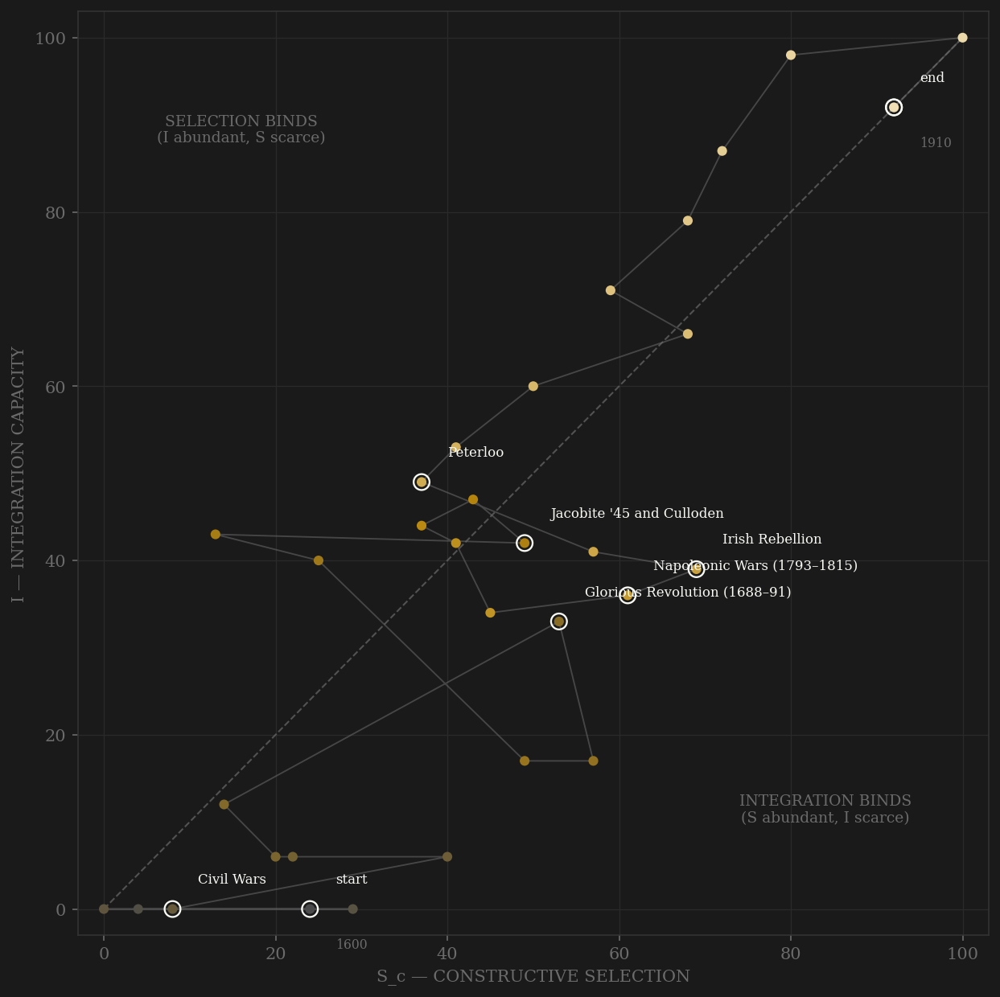

Britain is the thickest-evidence polity in the sample, and its arc is a staircase rather than a dome. The seventeenth century is the violent floor: the measured Old Bailey death-sentence share opens at its series maximum — 22.7% of trials ending in a sentence of death in the 1670s, the Bloody Code baseline — while the destructive line spikes through the Civil Wars, the Bloody Assizes, and the Glorious Revolution. What changes everything is the 1690s: the financial revolution builds a new elite ladder out of Bank stock and navy commissions, the post-1688 settlement turns contest into elections (ten of them between 1695 and 1715), and integration begins the long climb that never reverses. The engine then rises in waves — the rage of party, Old Corruption's trough under Walpole, the wartime meritocracy of Nelson's navy — until the hinge of the whole series: the 1850s–1870s, when Northcote-Trevelyan, the Indian Civil Service exams, the Order in Council of 1870, and the abolition of purchased commissions in 1871 replace patronage with examination in a single generation, exactly as the Reform Acts triple the electorate and the state nearly stops hanging (death-sentence share: 0.25% by the 1840s). From there engine and complexity climb together — GDP per capita, urbanization past 40%, the City clearing the world's payments — and both are still rising when the series hits 1914. The lag reads +0, but that is a lower bound, not a measurement: Britain's peak is right-censored by the war, and the honest verdict is that the observed window never contains the turn.

The trajectory enters at the origin — integration near zero on the measured trade and finance series, contest confined to a patronage court — and spends the seventeenth century pinned against the left wall, twice knocked to the floor by internal violence (the 1640s, 1688). The financial revolution is the visible kink: from the 1690s the path climbs both axes at once and never again touches a wall. Unlike Song (which crossed the diagonal early and starved for selection) or Rome (which died of it), Britain rides the diagonal for two centuries — selection and integration rising in step, the most sustained balanced climb in the sample. The reform era bends the path steeply up the selection axis (open competition, the franchise arc) while railways, the penny post, and the gold-standard City push integration to its ceiling. The series ends in the top-right corner at 92/92 — both axes near their maxima, the engine at full throttle — which is precisely what right-censoring looks like in phase space: a trajectory cut off mid-flight, not a completed arc.
Coded by locus and target, never by outcome. Britain is the cleanest locus-rule laboratory in the sample because the same century contains both kinds of violence at full intensity. Everything from 1639 to 1691 that historians file under 'British wars' is S_d by locus — the Bishops' Wars are a king making war on his own Scottish realm, the Civil Wars kill ~190,000 English (a higher share than 1914–18), Monmouth and the Bloody Assizes are the state hanging its own west country, and 1688 is a dynastic overthrow with Dutch backing, internal by target. The Jacobite risings of 1715 and 1745 stay internal too: wars for the throne inside the realm, ending in Culloden and the proscription of a society. Against this, the long French contest from 1689 to 1815 — Nine Years' War, Blenheim, the Seven Years' World War, Trafalgar — is textbook channel B: peer rivalry that disciplined the fiscal-naval state without once penetrating its coordination core. The hard case is the American War, kept in B by the Hannibal rule: a periphery seceded and a Bourbon coalition piled on, but the home machinery never broke — while the Gordon Riots that same decade, and Peterloo, and Ireland in 1798, are S_d despite their smaller body counts, because the target was the polity's own coordination: a yeomanry charge into a franchise meeting is state violence against its subjects' capacity to organize, which is exactly what the Old Bailey series measures at scale.
| YEAR | CONFLICT | CODE | CODING RATIONALE |
|---|---|---|---|
| 1639 | Bishops' Wars | Sd | A king making war on his own Scottish realm to enforce a prayer book — internal locus, the fuse of 1642 |
| 1642 | Civil Wars | Sd | 1642–51: ~190,000 dead in England (~3.7% — a higher share than 1914–18), regicide 1649 — the polity destroying its own coordination machinery; worst S_d decade in the span |
| 1652 | First Anglo-Dutch War | Sc | Commercial-naval peer contest; the Navigation Act fought at sea — external locus throughout |
| 1665 | Second Anglo-Dutch War (Medway 1667) | Sc | De Ruyter burned the fleet in its own anchorage — ships destroyed, coordination machinery untouched; the Hannibal rule holds even at Chatham |
| 1685 | Monmouth Rebellion & Bloody Assizes | Sd | Rising for the throne; ~320 hanged, ~800 transported — the state's judicial violence against its own west country |
| 1688 | Glorious Revolution (1688–91) | Sd | Dynastic overthrow, Dutch-backed but internal by target — with the Williamite war in Ireland (Boyne, Aughrim, Limerick) and Glencoe as its enforcement arm |
| 1689 | Nine Years' War | Sc | The French contest opens — peer rivalry that builds the fiscal-military state (Bank of England 1694 is a war finance instrument) |
| 1702 | War of the Spanish Succession | Sc | Blenheim, Ramillies, Utrecht — peer contest at maximum, fought entirely beyond the core; rage-of-party elections at home the same decade |
| 1745 | Jacobite '45 and Culloden | Sd | A war for the throne inside the realm (as the '15 before it); Culloden and the proscription of Highland society = state violence against its own periphery's coordination |
| 1756 | Seven Years' War | Sc | The first world war fought as pure channel B — France beaten in Canada, India, and at sea; the home machinery never so much as strained |
| 1775 | American War (1775–83) | Sc | Kept in B by the Hannibal rule: periphery secession plus a Bourbon world war from 1778 — the home coordination machinery held; the Gordon Riots (1780, ~285 shot) are coded separately as S_d |
| 1793 | Napoleonic Wars (1793–1815) | Sc | The external-rivalry maximum of the span — Trafalgar, the blockade, Waterloo; twenty-two war-years against the peer that defined the state |
| 1798 | Irish Rebellion | Sd | 10–30,000 dead inside the polity — the bloodiest internal event since 1651; followed by the Union of 1801 that internalized the wound |
| 1819 | Peterloo | Sd | A yeomanry charge into a franchise meeting, then the Six Acts — state violence aimed precisely at subjects' capacity to coordinate; the type case of the S_d definition |
| 1854 | Crimean War | Sc | Peer contest with Russia whose administrative scandals directly fed the Northcote-Trevelyan reform wave — channel B disciplining channel A |
| 1899 | Boer War & the Dreadnought race | Sc | Imperial war whose recruitment scandal launched 'national efficiency' politics; the German naval race from 1898 is channel B's terminal tech-race form |
| COMPONENT | GRADE | BASIS |
|---|---|---|
| S_c A — Elite-entry (0.40) | ◐ coded, anchored to measured education | Patronage→open-competition arc coded 0–10 per decade (office sale, New Model 1645, Pepys' lieutenant exams 1677, financial revolution, economical reform 1782, Test/Catholic repeal 1828–29, Northcote-Trevelyan 1854, ICS open exams 1855, Order in Council 1870, purchase of commissions abolished 1871, Education Acts 1870/1902); calibrated against Clio Infra numeracy (1620=76 → 1910=99.6) and average years of education 1820–1910 (1.76→5.86). No single measured entry series spans 1600–1910 — the honest gap in an otherwise measured polity |
| S_c B — External rivalry (0.30 cap) | ◐ war-years chronology + COW 1816+ | External war-years/decade vs Spain, France, the Dutch Republic, Russia, Qing, Germany + naval-race ordinal (Two-Power Standard 1889, Dreadnoughts). Locus-cleaned: Bishops' Wars, Civil Wars 1642–51, Monmouth, 1688–91, Jacobite '15/'45, Ireland 1798 are S_d, not B. This channel alone = the frozen Sc_v1_combat column |
| S_c C — Within-rules politics (0.30) | ● measured 1789+ · ○ coded before | OWID/V-Dem electoral democracy index decade means from 1789 (0.243→0.477 across the three Reform Acts), cross-checked vs Polity political competition 1810+ (15→~70); pre-1789 coded on the same scale, splice-anchored at the 1780s (coded 2.3 vs measured 2.43) |
| S_d — Destructive | ● measured (Old Bailey corpus) + ○ coded | Old Bailey death-sentence share 1674–1913 (197k+ trials; 22.7% of trials in the 1670s → 0.25% by the 1840s — the Bloody Code and its abolition, measured) at 0.5, + coded civil-violence ordinal at 0.5 (Civil Wars=10, Culloden repression, Ireland 1798, Peterloo, Swing, Chartism, Fenians, suffragette coercion). London-jurisdiction only; the arc is the signal |
| I — Integration | ● measured trade + rates · ○ coded institutions | BoE millennium dataset: export+import chained volumes per capita 0.40 + inverse long rate (consols 1703+, Bank Rate 1694+) 0.30 + coded institutional ordinal 0.30 (BoE 1694, Union 1707, Irish Union 1801, gold standard 1821, railways, penny post, telegraph, the City as world clearing house) |
| C — Complexity | ● measured | Equal-weight mean of Maddison UK GDPpc (annual, complete 1600–1913), Clio urbanization ratio, industrial production index 1700+ (compiled, ◐). Book-titles-per-capita excluded — suspected source-basis break ~1820 would inject a false mid-series peak |
| E — Entropy | ● measured inflation + debt · ○ coded crises | Share of decade years with |CPI inflation| >5% (BoE) 0.40 + national debt/GDP (Clio, 1692+; peaks ~260% in the 1810s) 0.30 + coded crisis ordinal 0.30 (plague 1665, Fire 1666, Stop of the Exchequer 1672, South Sea 1720, 1797 suspension, 1825, Irish Famine, Overend Gurney 1866, Baring 1890) |
| R — Population | ● measured (BoE) | Millions, raw. England-only 1600–1690, GB+NI from 1700 — the ~5.5M→8.8M step at 1700 is a territorial basis switch, flagged in R_notes, never a demographic event |
32 decade rows (1600–1910), built STRAIGHT to S_c definition v2 (contestability composite, 0.40 elite-entry / 0.30 external hard cap / 0.30 within-rules) by scripts/build_british_sicre.py, 2026-07-06; per-decade channel scores and rationales in data/raw/british/coding_ledger_v2.csv; full component audit in components_audit.csv; Sc_v1_combat = channel B alone per the straight-to-v2 convention. BOTH DEFINITIONS REPORTED: v2 engine 1910 → C 1910, lag >= +0 RIGHT-CENSORED (both smoothed series are still rising at the series end — the 1914 cliff truncates the peak; +0 is a lower bound, not a peak-to-peak measurement); v1 combat-only engine 1910 → C 1910, lag >= +0 RIGHT-CENSORED with a knife-edge caveat: smoothed v1 engine is 44.5 at 1910 vs 44.3 at 1750–60, so a 0.2-point wiggle would relocate the v1 engine peak to the Seven Years' War era and stretch the v1 lag to +160 LONG; the v2 engine has no such fragility (96.0 vs 90.7). Frozen protocol throughout: 3-decade centered rolling mean, engine = min(S_c, I). Measured backbone: BoE 'A millennium of macroeconomic data' (GDP, population, prices, rates, trade volumes), Old Bailey Online death-sentence share 1674–1913 (S_d), Maddison GDPpc (annual, complete), OWID/V-Dem (channel C from 1789), Clio Infra (urbanization, debt/GDP, education anchors), COW NMC (B cross-check 1816+). Channel A is coded (◐) — no measured elite-entry series spans the polity. Rebuild: build_british_sicre.py, then polity_report.py --slug british.